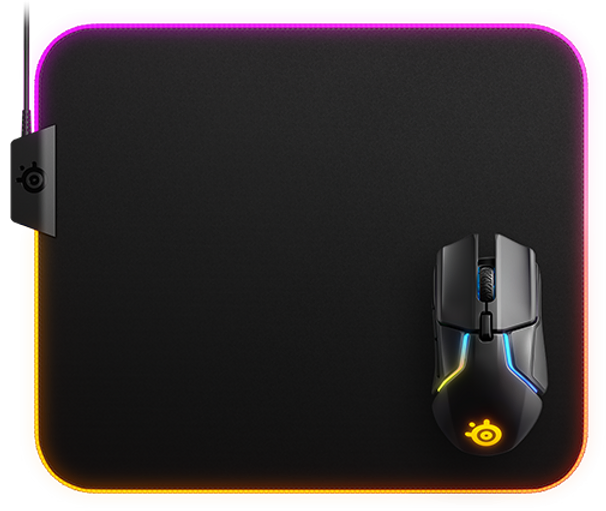
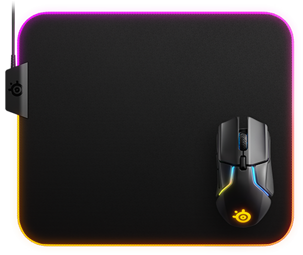

Mousepad Gamer PRISM CLOTH MEDIUM
R$ 310,27 à vista no PIX
Ou R$ 344,75 em 12x de R$ 28,72 s/juros
Descriçaõ do produto
Feito de tecido com borracha de silicone. A base de borracha durável e antiderrapante foi projetada para eliminar movimentos indesejados e fornecer uma plataforma sólida para jogos intensos.
Tamanho
Com um tamanho amplo de 90cm x 30cm com uma espessura de 4mm